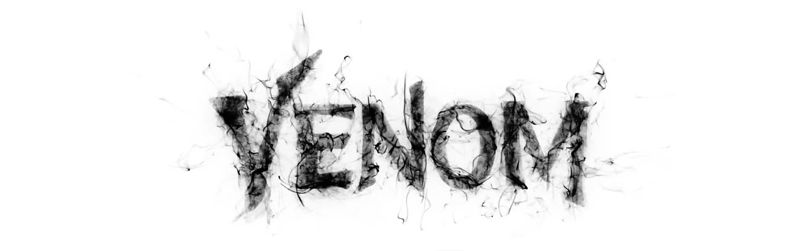
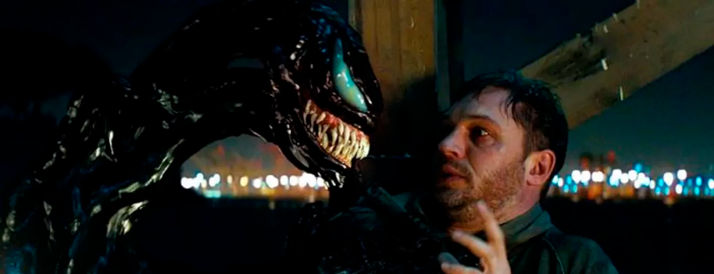

Venom
¿La nueva Batman v Superman?
¿La nueva Batman v Superman?
Antes de empezar dejemos dos cosas claras. Uno: estamos ante una película basada en comics y no ante una nominación del oscar. Dos: relajen su niño rata interior, ya después de tener más de 10 años viendo este tipo de películas no puedes esperar que todo sea perfecto.
Acabo de ver la película y es un poco raro, porque me siento como fan de DC, tratando de defender lo indefendible (Batman v Superman). Aunque Venom fue criticada de forma brutal, tengo que defenderla porque la verdad no estuvo tan mal como me hicieron creer. Fue una película bastante entretenida que me dio mucho de lo que estaba esperando.
Aunque si, mucha de la crítica es acertada, hay escenas innecesarias, a veces todo va muy rápido, y ocurren cosas de poca o ninguna relevancia. Pero como buen fan de comics y una persona que busca entretenerse con la película, tengo que decir que para mí fue muy entretenida.
1. Venom. El personaje está realmente increíble, el aspecto muy fiel al comic y el cómo se veía el simbionte en todas sus formas fue de lo mejor, realmente quede fascinado que fuera tan monstruoso y repulsivo, tal como debía ser.
2. La voz de Venom. Este tenía que ser un punto y aparte porque estuvo demasiado bien logrado el efecto de la voz que tiene Venom. Desde que vi el tráiler estaba muy emocionado por escucharlo, es temible e imponente. Y es lo suficientemente grotesca sin llegar a ser inentendible.
3. Origen del personaje. Esta bastante bien que se diera a entender de donde vienen estos simbiontes y que hay muchos más como ellos. Lo cual (como fan de los comics) se agradece.
4. Pelea entre simbiontes. Hay una pelea que todos ya habíamos visto en el tráiler entre Venom y otro simbionte. Estuvo increíble ver a esos dos despedazarse y reconstruirse. Fue excelente para el fanservice.
5. Interacción entre Venom y Eddie. Fue curioso ver la manera en que se podían comunicar estos dos personajes, hay partes bastante graciosas cuando pasa.
6. Escenas post créditos. Esta película tiene dos escenas post créditos. De las cuales no puedo decir mucho sin hacer spoiler, solo diré que una te hace saber que podría haber otra película de Venom y la otra escena aunque no tiene nada que ver con la película, fue simplemente hermosa.
Un punto negativo para esta película es la evidente falta de Spider-Man. La película está hecha de tal forma que se me hace demasiado difícil imaginar que se pueda meter a Spider-Man en el futuro. No creo que suceda ni porque Disney compre a SONY. Y esto es un poco decepcionante ya que estos dos personajes totalmente desenlazados como que no cuadra.
Al no existir un Spider-Man quedan muchos huecos en las motivaciones de Venom. Técnicamente estamos tratando con un nuevo Venom con motivaciones muy diferentes a las que ya conocíamos. Si no hay Spider-man no hay araña que destruir.
Y luego tenemos a Eddie Brock. Aunque Tom Hardy lo considero buen actor y todos lo queremos por su papel de Bane en Batman - The Dark Knight Rises. Sufrió un poco del mismo mal que Jared Leto sufrió con el Joker. Aunque no es culpa de los actores, como se hizo la personalidad del personaje que interpretaron hace que todos sintamos que se desaprovecha mucho el potencial del actor.
En los comics Eddie Brock es un tipo malo que hace lo que quiere y que con solo su apariencia (aun sin simbionte) te hace saber que es mejor que no te metas con él. En esta película es un tipo miedoso, bastante bonachon si te pones a pensar. Lo rescatable es que en esta película tampoco era muy necesario que Eddie fuera un matón. Y al menos fue gracioso y no aburrido.
Aunque se puede profundizar un poco más en lo negativo. Al final resultó ser una buena película para todo fan de Venom. Aun los más “críticos” deben aceptar que con sus errores argumentales y huecos en la trama, fue entretenida. Y en pleno 2018 criticar cada mínimo aspecto de una película basada en comics es tonto y una pérdida de tiempo. Ya lo que muchos esperamos es simplemente una película entretenida donde podamos ver a nuestros personajes favoritos en acción (y que no dejen de pelear solo porque sus madres se llamen Martha). Así que vayan sin miedo a ver esta película que de todas formas se van a entretener. Por mi parte estoy muy contento por al fin ver a un buen Venom en el cine.
P. D. No odio a DC, pero si se pasaron con eso de Martha. Gracias por leer.